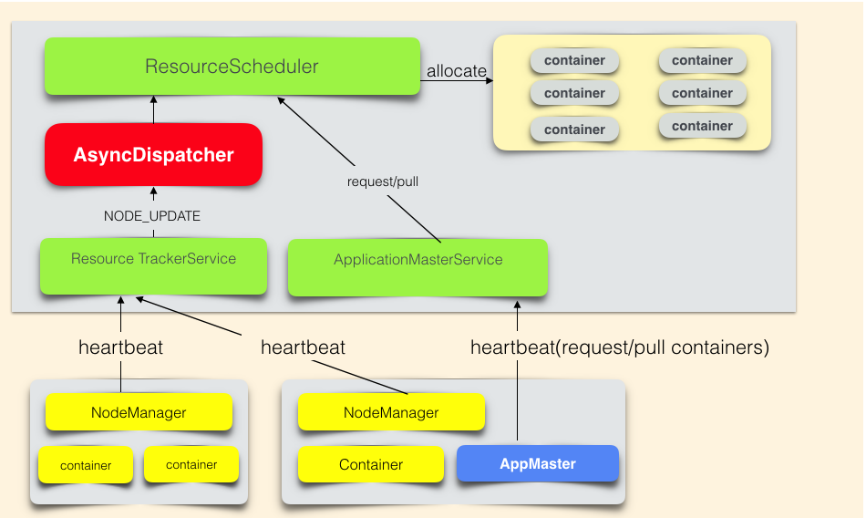

大数据-002hadoop之yarn基础知识
yarn架构
yarn负责作业资源调度，在集群中找到满足业务的资源，帮助作业启动任务，管理作业的生命周期。
yarn详细的架构设计

资源抽象
YARN在cpu，memory这两个资源维度对集群资源做了抽象。
class Resource{
int cpu; //cpu核心个数
int memory-mb; //内存的MB数
}
作业向YARN申请资源的请求是：List[ResourceRequest]
class ResourceRequest{
int numContainers; //需要的container个数
Resource capability;//每个container的资源
}
YARN对作业响应是：List[Container]
class Container{
ContainerId containerId; //YARN全局唯一的container标示
Resource capability; //该container的资源信息
String nodeHttpAddress; //该container可以启动的NodeManager的hostname
}
yarn调度架构

名词解释
- ResourceScheduler是YARN的调度器，负责Container的分配。
- AsyncDispatcher是单线程的事件分发器，负责向调度器发送调度事件。
- ResourceTrackerService是资源跟踪服务，主要负责接收处理NodeManager的心跳信息。
- ApplicationMasterService是作业的RPC服务，主要负责接收处理作业的心跳信息。
- AppMaster是作业的程序控制器，负责跟YARN交互获取/释放资源。
调度流程
- 作业资源申请过程：AppMaster通过心跳告知YARN资源需求(List[ResourceRequest])，
并取回上次心跳之后，调度器已经分配好的资源(List[Container])。 - 调度器分配资源流程是：Nodemanager心跳触发调度器为该NodeManager分配Container。 资源申请和分配是异步进行的。ResourceScheduler是抽象类，需要自行实现。 社区实现了公平调度器(FairScheduler)和容量调度器(CapacityScheduler)。 美团点评根据自身的业务模式的特点，采用的是公平调度器。
yarn资源调度流程
- 用户向YARN 中提交应用程序， 其中包括ApplicationMaster 程序、启动ApplicationMaster 的命令、用户程序等。
- ResourceManager 为该应用程序分配第一个Container， 并与对应的NodeManager 通信，要求它在这个Container 中启动应用程序的ApplicationMaster。
- ApplicationMaster 首先向ResourceManager 注册， 这样用户可以直接通过ResourceManage 查看应用程序的运行状态，然后它将为各个任务申请资源，并监控它的运行状态，直到运行结束，即重复步骤4~7。
- ApplicationMaster 采用轮询的方式通过RPC 协议向ResourceManager 申请和领取资源。
- 一旦ApplicationMaster 申请到资源后，便与对应的NodeManager 通信，要求它启动任务。
- NodeManager 为任务设置好运行环境（包括环境变量、JAR 包、二进制程序等）后，将任务启动命令写到一个脚本中，并通过运行该脚本启动任务。
- 各个任务通过某个RPC 协议向ApplicationMaster 汇报自己的状态和进度，以让ApplicationMaster 随时掌握各个任务的运行状态，从而可以在任务失败时重新启动任务。在应用程序运行过程中，用户可随时通过RPC 向ApplicationMaster 查询应用程序的当前运行状态。
- 应用程序运行完成后，ApplicationMaster 向ResourceManager 注销并关闭自己。
yarn的三大调度策略
-
FIFO Scheduler把应用按提交的顺序排成一个队列，这是一个先进先出队列，在进行资源分配的时候，先给队列中最头上的应用进行分配资源，待最头上的应用需求满足后再给下一个分配，以此类推。
-
Capacity（容量）调度器，有一个专门的队列用来运行小任务，但是为小任务专门设置一个队列会预先占用一定的集群资源，这就导致大任务的执行时间会落后于使用FIFO调度器时的时间。
-
在Fair（公平）调度器中，我们不需要预先占用一定的系统资源，Fair调度器会为所有运行的job动态的调整系统资源。当第一个大job提交时，只有这一个job在运行，此时它获得了所有集群资源；当第二个小任务提交后，Fair调度器会分配一半资源给这个小任务，让这两个任务公平的共享集群资源。
需要注意的是，在下图Fair调度器中，从第二个任务提交到获得资源会有一定的延迟，因为它需要等待第一个任务释放占用的Container。小任务执行完成之后也会释放自己占用的资源，大任务又获得了全部的系统资源。最终的效果就是Fair调度器即得到了高的资源利用率又能保证小任务及时完成。
hadoop中combiner和partition的作用
-
combiner是发生在map的最后一个阶段，父类就是Reducer，意义就是对每一个maptask的输出进行局部汇总，以减小网络传输量，缓解网络传输瓶颈，提高reducer的执行效率。
-
partition的主要作用将map阶段产生的所有kv对分配给不同的reducer task处理，可以将reduce阶段的处理负载进行分摊
举例什么情况要使用combiner，什么情况不使用？
求平均数的时候就不需要用combiner，因为不会减少reduce执行数量。
在其他的时候，可以依据情况，使用combiner，来减少map的输出数量，减少拷贝到reduce的文件，
从而减轻reduce的压力，节省网络开销，提升执行效率
Mapreduce的map数量和reduce数量是由什么决定的,怎么配置
- map的数量由输入切片的数量决定，128M切分一个切片，只要是文件也分为一个切片，有多少个切片就有多少个map Task。
- reduce数量自己配置。
用mapreduce怎么处理数据倾斜问题
数据倾斜定义
map /reduce程序执行时，reduce节点大部分执行完毕，但是有一个或者几个reduce节点运行很慢，
导致整个程序的处理时间很长，这是因为某一个key的条数比其他key多很多（有时是百倍或者千倍之多），
这条key所在的reduce节点所处理的数据量比其他节点就大很多，从而导致某几个节点迟迟运行不完，
此称之为数据倾斜。
解决方案
（1）局部聚合加全局聚合。
第一次在 map 阶段对那些导致了数据倾斜的 key 加上 1 到 n 的随机前缀，这样本来相
同的 key 也会被分到多个 Reducer 中进行局部聚合，数量就会大大降低。
第二次 mapreduce，去掉 key 的随机前缀，进行全局聚合。
思想：二次 mr，第一次将 key 随机散列到不同 reducer 进行处理达到负载均衡目的。第
二次再根据去掉 key 的随机前缀，按原 key 进行 reduce 处理。
这个方法进行两次 mapreduce，性能稍差。
（2）增加 Reducer，提升并行度
JobConf.setNumReduceTasks(int)
（3）实现自定义分区
根据数据分布情况，自定义散列函数，将 key 均匀分配到不同 Reducer
MapReduce优化经验
1. 设置合理的map和reduce的个数。合理设置blocksize
2. 避免出现数据倾斜
3. combine函数
4. 对数据进行压缩
5. 小文件处理优化：
a. 事先合并成大文件，combineTextInputformat，
b. 在hdfs上用mapreduce将小文件合并成SequenceFile大文件（key:文件名，value：文件内容）
6. 参数优化
MR运行流程解析
1. 一个mr程序启动的时候，最先启动的是MRAppMaster，MRAppMaster启动后根据本次job的描述信息，
计算出需要的maptask实例数量，然后向集群申请机器启动相应数量的maptask进程
2. maptask进程启动之后，根据给定的数据切片范围进行数据处理，主体流程为：
a. 利用客户指定的inputformat来获取RecordReader读取数据，形成输入KV对
b. 将输入KV对传递给客户定义的map()方法，做逻辑运算，并将map()方法输出的KV对收集到缓存
c. 将缓存中的KV对按照K分区排序后不断溢写到磁盘文件
3. MRAppMaster监控到所有maptask进程任务完成之后，
会根据客户指定的参数启动相应数量的reducetask进程，
并告知reducetask进程要处理的数据范围（数据分区）
4. Reducetask进程启动之后，根据MRAppMaster告知的待处理数据所在位置，
从若干台maptask运行所在机器上获取到若干个maptask输出结果文件，并在本地进行重新归并排序，
然后按照相同key的KV为一个组，调用客户定义的reduce()方法进行逻辑运算，并收集运算输出的结果KV,
然后调用客户指定的outputformat将结果数据输出到外部存储
MR中shuffle阶段过程
shuffle定义: 洗牌、发牌——（核心机制：缓存，数据分区，排序，Merge进行局部value的合并）；
具体来说：就是将maptask输出的处理结果数据，分发给reducetask，并在分发的过程中，对数据按key进行了分区和排序；
1. Map 方法之后 Reduce 方法之前这段处理过程叫 Shuffle
2. Map 方法之后，数据首先进入到分区方法，把数据标记好分区，然后把数据发送到 环形缓冲区；
环形缓冲区默认大小 100m，环形缓冲区达到 80%时，进行溢写；
溢写前对数 据进行排序，排序按照对 key 的索引进行字典顺序排序，排序的手段快排；
溢写产生大量溢 写文件，需要对溢写文件进行归并排序；
对溢写的文件也可以进行 Combiner 操作，前提是汇总操作，求平均值不行。
最后将文件按照分区存储到磁盘，等待 Reduce 端拉取。
3. 每个 Reduce 拉取 Map 端对应分区的数据。
拉取数据后先存储到内存中，内存不够 了，再存储到磁盘。
拉取完所有数据后，采用归并排序将内存和磁盘中的数据都进行排序。
4. 在进入 Reduce 方法前，可以对数据进行分组操作。
Hadoop总job和Tasks之间的区别是什么？
- Job是我们对一个完整的mapreduce程序的抽象封装
- Task是job运行时，每一个处理阶段的具体实例，如map task，reduce task，maptask和reduce task都会有多个并发运行的实例
Hadoop优化有哪些方面
0）HDFS 小文件影响
（1）影响 NameNode 的寿命，因为文件元数据存储在 NameNode 的内存中
（2）影响计算引擎的任务数量，比如每个小的文件都会生成一个 Map 任务
1）数据输入小文件处理：
（1）合并小文件：对小文件进行归档（Har）、自定义 Inputformat 将小文件存储成SequenceFile 文件。
（2）采用 ConbinFileInputFormat 来作为输入，解决输入端大量小文件场景。
（3）对于大量小文件 Job，可以开启 JVM 重用。
2）Map 阶段
（1）增大环形缓冲区大小。由 100m 扩大到 200m
（2）增大环形缓冲区溢写的比例。由 80%扩大到 90%
（3）减少对溢写文件的 merge 次数。（10 个文件，一次 20 个 merge）
（4）不影响实际业务的前提下，采用 Combiner 提前合并，减少 I/O。
3）Reduce 阶段
（1）合理设置 Map 和 Reduce 数：两个都不能设置太少，也不能设置太多。
太少，会导致 Task 等待，延长处理时间；太多，会导致 Map、Reduce 任务间竞争资源，造成处理超时等错误。
（2）设置 Map、Reduce 共存：调整 slowstart.completedmaps 参数，
使 Map 运行到一定程度后，Reduce 也开始运行，减少 Reduce 的等待时间。
（3）规避使用 Reduce，因为 Reduce 在用于连接数据集的时候将会产生大量的网络消耗。
（4）增加每个 Reduce 去 Map 中拿数据的并行数
（5）集群性能可以的前提下，增大 Reduce 端存储数据内存的大小。
4）IO 传输
（1）采用数据压缩的方式，减少网络 IO 的的时间。安装 Snappy 和 LZOP 压缩编码器。
（2）使用 SequenceFile 二进制文件
5）整体
（1）MapTask 默认内存大小为 1G，可以增加 MapTask 内存大小为 4-5g
（2）ReduceTask 默认内存大小为 1G，可以增加 ReduceTask 内存大小为 4-5g
（3）可以增加 MapTask 的 cpu 核数，增加 ReduceTask 的 CPU 核数
（4）增加每个 Container 的 CPU 核数和内存大小
（5）调整每个 Map Task 和 Reduce Task 最大重试次数
列出正常工作的hadoop集群中hadoop都分别启动哪些进程以及他们的作用
1.NameNode它是hadoop中的主服务器，管理文件系统名称空间和对集群中存储的文件的访问，
保存有metadate。
2.SecondaryNameNode它不是namenode的冗余守护进程，而是提供周期检查点和清理任务。
帮助NN合并editslog，减少NN启动时间。
3.DataNode它负责管理连接到节点的存储（一个集群中可以有多个节点）。
每个存储数据的节点运行一个datanode守护进程。
4.ResourceManager（JobTracker）JobTracker负责调度DataNode上的工作。
每个DataNode有一个TaskTracker，它们执行实际工作。
5.NodeManager（TaskTracker）执行任务
6.DFSZKFailoverController高可用时它负责监控NN的状态，并及时的把状态信息写入ZK。
它通过一个独立线程周期性的调用NN上的一个特定接口来获取NN的健康状态。
FC也有选择谁作为Active NN的权利，因为最多只有两个节点，
目前选择策略还比较简单（先到先得，轮换）。
7.JournalNode 高可用情况下存放namenode的editlog文件.
Hadoop高可用HA模式
HDFS高可用原理：
Hadoop HA（High Available）通过同时配置两个处于Active/Passive模式的Namenode来解决上述问题，状态分别是Active和Standby. Standby Namenode作为热备份，从而允许在机器发生故障时能够快速进行故障转移，同时在日常维护的时候使用优雅的方式进行Namenode切换。Namenode只能配置一主一备，不能多于两个Namenode。
主Namenode处理所有的操作请求（读写），而Standby只是作为slave，维护尽可能同步的状态，使得故障时能够快速切换到Standby。为了使Standby Namenode与Active Namenode数据保持同步，两个Namenode都与一组Journal Node进行通信。当主Namenode进行任务的namespace操作时，都会确保持久会修改日志到Journal Node节点中。Standby Namenode持续监控这些edit，当监测到变化时，将这些修改同步到自己的namespace。
当进行故障转移时，Standby在成为Active Namenode之前，会确保自己已经读取了Journal Node中的所有edit日志，从而保持数据状态与故障发生前一致。
为了确保故障转移能够快速完成，Standby Namenode需要维护最新的Block位置信息，即每个Block副本存放在集群中的哪些节点上。为了达到这一点，Datanode同时配置主备两个Namenode，并同时发送Block报告和心跳到两台Namenode。
确保任何时刻只有一个Namenode处于Active状态非常重要，否则可能出现数据丢失或者数据损坏。当两台Namenode都认为自己的Active Namenode时，会同时尝试写入数据（不会再去检测和同步数据）。为了防止这种脑裂现象，Journal Nodes只允许一个Namenode写入数据，内部通过维护epoch数来控制，从而安全地进行故障转移。
安装配置一个hadoop集群的基本步骤
1. 使用root账户登录。
2. 修改IP。
3. 修改Host主机名。
4. 配置SSH免密码登录。
5. 关闭防火墙。
6. 安装JDK。
7. 上传解压Hadoop安装包。
8. 配置Hadoop的核心配置文件
hadoop-evn.sh，
core-site.xml，
mapred-site.xml，
hdfs-site.xml，
yarn-site.xml
9. 配置hadoop环境变量
10. 格式化hdfs
# bin/hadoop namenode -format
11. 启动节点start-all.sh
hadoop中yarn常用的命令
yarn jobs
yarn kill